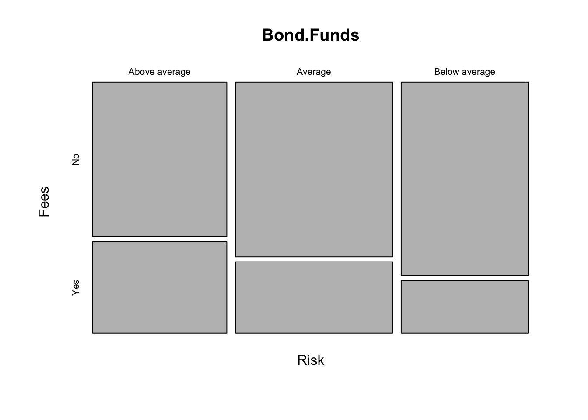
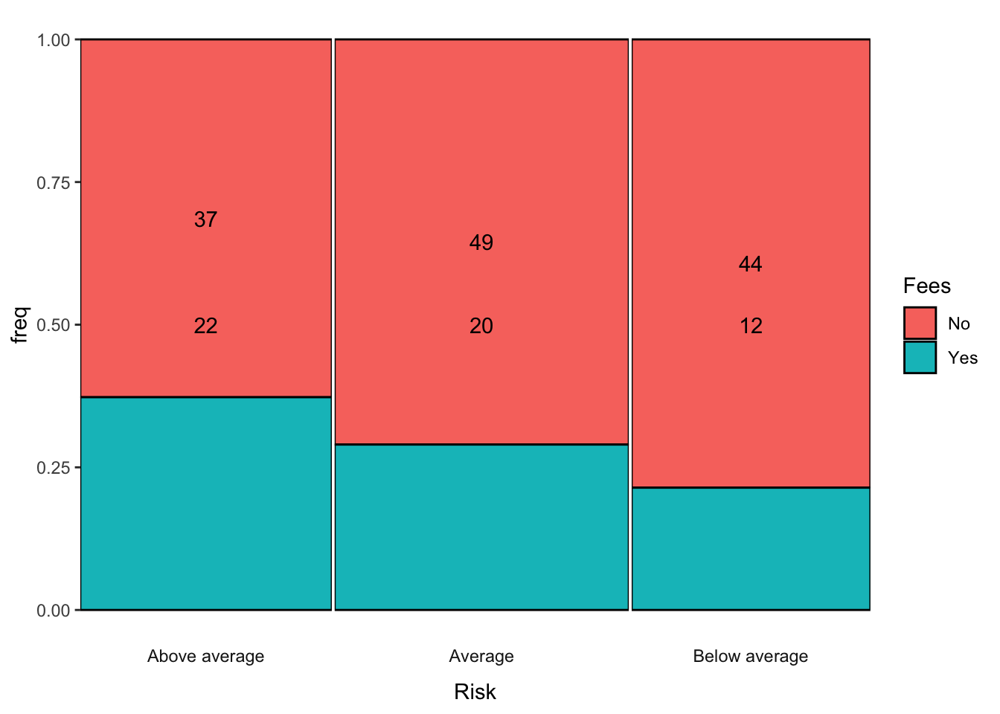
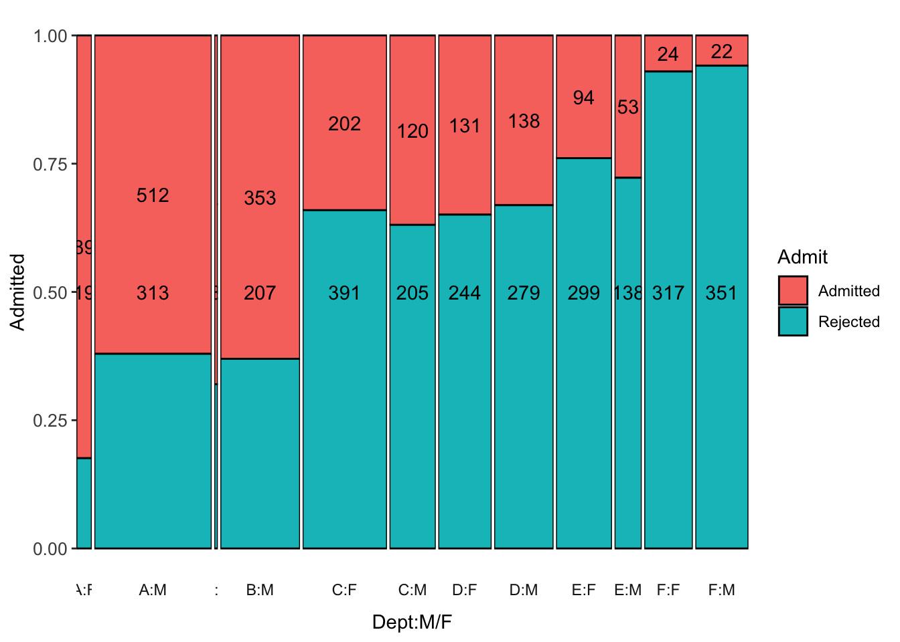
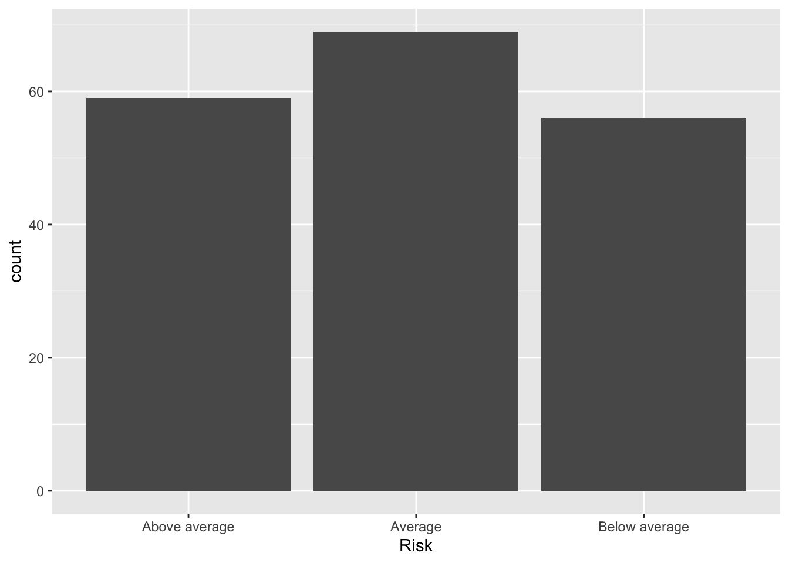
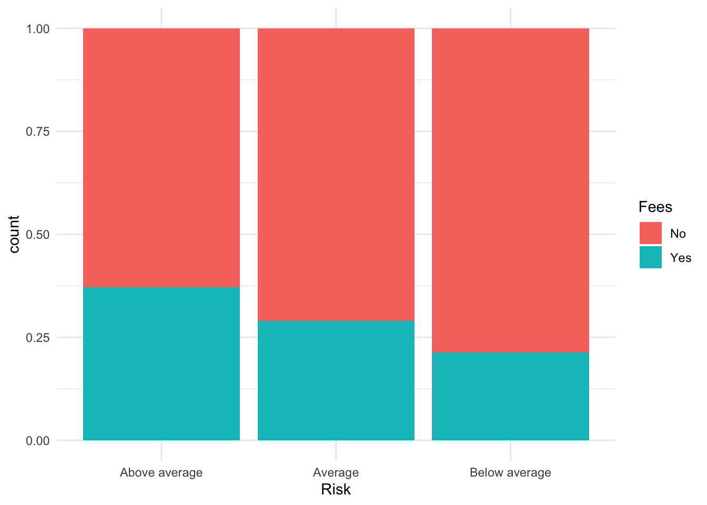
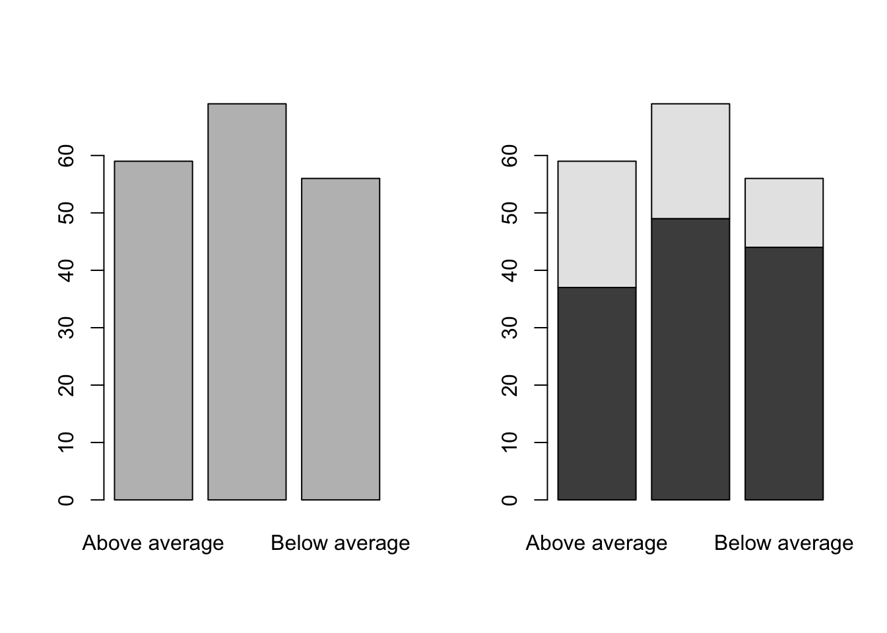
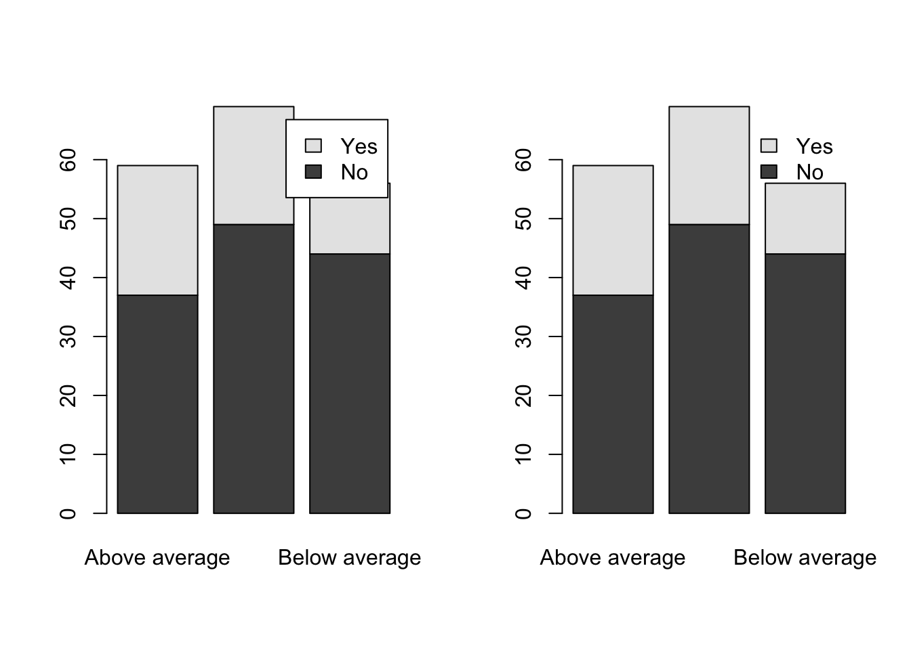
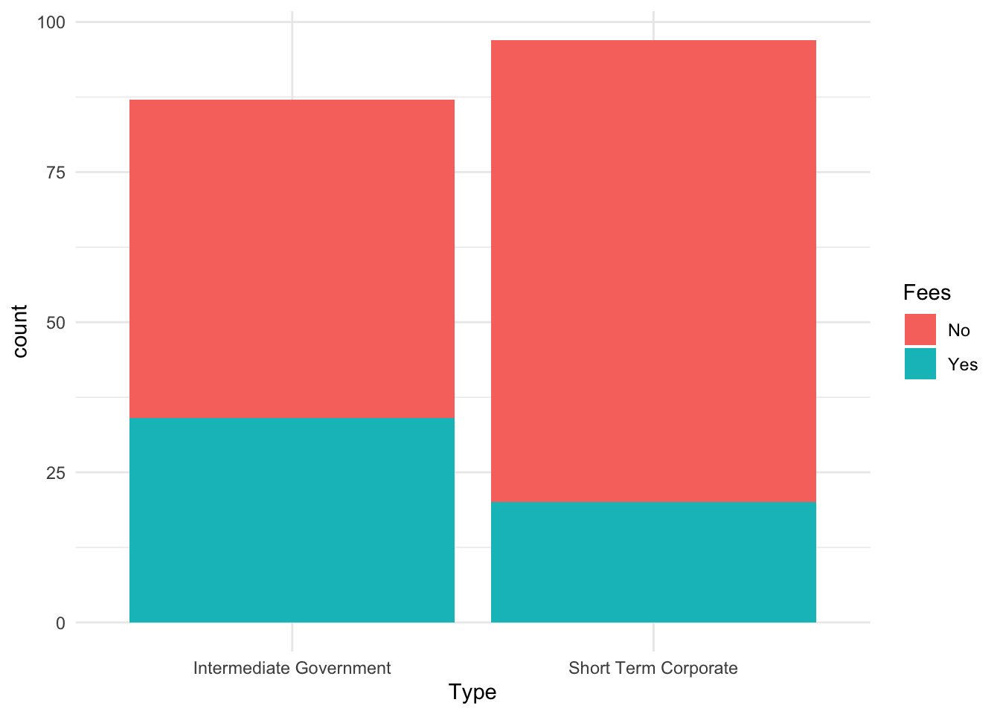

Bond.Funds <- read.csv("https://github.com/robertwwalker/DADMStuff/raw/master/BondFunds.csv")R Markdown
There is detailed help for all that Markdown can do under Help in the RStudio. The key to it is knitting documents with the Knit button in the RStudio. If we use helpers like the R Commander, Radiant, or esquisse, we will need the R code implanted in the Markdown document in particular ways. I will use Markdown for everything. I even use a close relation of Markdown in my scholarly pursuits.
The Packages: tidyverse and esquisse
We will rely on five. The tidyverse is Hadley Wickham’s collection of packages. It represents a different philosophy for the construction of exploratory data analysis with literate programming – code that you can read. We will rely on the %>% piping operators of the magrittr package that pipes something to a subsequent command as a core function of the tidyverse.
For everything that we want in a summary, there is the skimr function skim. For cross-tabulation the easy way, there is janitor. The other two are developmental pieces of software that have yet to deploy into the regular package system of R. esquisse and parts of that’s so random blog’s package for implementing ggmosaic.
pkgTest <- function(x)
{
if (!require(x,character.only = TRUE))
{
install.packages(x,dep=TRUE, type="binary")
if(!require(x,character.only = TRUE)) stop("Package not found")
}
}
pkgTest("tidyverse")
pkgTest("magrittr")
pkgTest("skimr")
pkgTest("janitor")
pkgTest("devtools")
devtools::install_github("EdwinTH/thatssorandom")
pkgTest("dreamRs/esquisse")Loading the Data
First, the data.
What does it measure? Various measures for a collection of bond funds.
- Type: Intermediate Government or Short-Term Corporate
- Fees: Yes or No
- Risk: Above Average, Average, or Below Average
- Assets: Assets under management (in $ Millions).
- Return 2009: The annual returns in 2009.
- 3-Year-Return: The average annual return over three years.
- 5-Year-Return: The average annual return over five years.
A first go
To get a sense of the data, I will load the skim function and put it to work. In R, we will use the library command to load functions into the namespace – the set of recognizable commands. R needs to know how a function is defined to use it. The function skim appears in the skimr library.
library(skimr)
skim(Bond.Funds)| Name | Bond.Funds |
| Number of rows | 184 |
| Number of columns | 9 |
| _______________________ | |
| Column type frequency: | |
| character | 4 |
| numeric | 5 |
| ________________________ | |
| Group variables | None |
Variable type: character
| skim_variable | n_missing | complete_rate | min | max | empty | n_unique | whitespace |
|---|---|---|---|---|---|---|---|
| Fund.Number | 0 | 1 | 4 | 6 | 0 | 184 | 0 |
| Type | 0 | 1 | 20 | 23 | 0 | 2 | 0 |
| Fees | 0 | 1 | 2 | 3 | 0 | 2 | 0 |
| Risk | 0 | 1 | 7 | 13 | 0 | 3 | 0 |
Variable type: numeric
| skim_variable | n_missing | complete_rate | mean | sd | p0 | p25 | p50 | p75 | p100 | hist |
|---|---|---|---|---|---|---|---|---|---|---|
| Assets | 0 | 1 | 910.65 | 2253.27 | 12.40 | 113.72 | 268.4 | 621.95 | 18603.50 | ▇▁▁▁▁ |
| Expense.Ratio | 0 | 1 | 0.71 | 0.26 | 0.12 | 0.53 | 0.7 | 0.90 | 1.94 | ▂▇▅▁▁ |
| Return.2009 | 0 | 1 | 7.16 | 6.09 | -8.80 | 3.48 | 6.4 | 10.72 | 32.00 | ▁▇▅▁▁ |
| X3.Year.Return | 0 | 1 | 4.66 | 2.52 | -13.80 | 4.05 | 5.1 | 6.10 | 9.40 | ▁▁▁▅▇ |
| X5.Year.Return | 0 | 1 | 3.99 | 1.49 | -7.30 | 3.60 | 4.3 | 4.90 | 6.80 | ▁▁▁▅▇ |
# skimr::skim(Bond.Funds)tidy?
The beauty of tidy is rendering code readable with an organizational focus on data objects. Let me take the Bond Funds example and use a simple literate example to mirror a pivot table. Let’s pivot two basic statistics, the mean and standard deviation, then the median and interquartile range grouped by Risk. I should point out that the variable names containing spaces are difficult and have to be enclosed in quotes. Better naming at the outset would help. With simple names, we can ignore the quoting.
Numerical Summary
library(tidyverse)
Bond.Funds %>%
group_by(Risk) %>%
summarise(Avg.Return = mean(Return.2009),
SD.Return=sd(Return.2009),
median.Return=median(Return.2009),
IQR.Return=IQR(Return.2009))# A tibble: 3 × 5
Risk Avg.Return SD.Return median.Return IQR.Return
<chr> <dbl> <dbl> <dbl> <dbl>
1 Above average 8.31 9.24 7.9 13.0
2 Average 6.87 4.39 6 7.3
3 Below average 6.31 2.71 6.1 3.18I can also use skim.
Bond.Funds %>%
group_by(Risk,Fees) %>%
skim(Return.2009)| Name | Piped data |
| Number of rows | 184 |
| Number of columns | 9 |
| _______________________ | |
| Column type frequency: | |
| numeric | 1 |
| ________________________ | |
| Group variables | Risk, Fees |
Variable type: numeric
| skim_variable | Risk | Fees | n_missing | complete_rate | mean | sd | p0 | p25 | p50 | p75 | p100 | hist |
|---|---|---|---|---|---|---|---|---|---|---|---|---|
| Return.2009 | Above average | No | 0 | 1 | 8.25 | 8.92 | -8.8 | 0.70 | 9.90 | 13.50 | 32.0 | ▃▃▇▂▁ |
| Return.2009 | Above average | Yes | 0 | 1 | 8.42 | 9.96 | -4.8 | 0.98 | 6.85 | 14.93 | 29.7 | ▇▆▃▃▂ |
| Return.2009 | Average | No | 0 | 1 | 7.37 | 4.51 | -1.1 | 4.30 | 6.50 | 11.20 | 16.4 | ▆▆▇▇▃ |
| Return.2009 | Average | Yes | 0 | 1 | 5.66 | 3.93 | -0.6 | 3.35 | 4.80 | 8.00 | 12.9 | ▃▇▅▂▅ |
| Return.2009 | Below average | No | 0 | 1 | 6.33 | 2.80 | 0.2 | 4.85 | 6.20 | 7.58 | 13.0 | ▂▅▇▃▁ |
| Return.2009 | Below average | Yes | 0 | 1 | 6.26 | 2.46 | 1.5 | 5.02 | 6.05 | 8.22 | 10.1 | ▂▃▇▆▃ |
I want to recreate a categorical pivot table also.
Categorical Descriptions Requires Tables [or Graphics]
There are numerous ways to build tables in R. Base R has a table function that works but it does not naturally work inside data environments; we have to provide them using $ or with environments [or %$% in magrittr]. This brief description of environments is part of a broader idea of scoping in R.
Easiest: janitor
The package janitor contains a tabyl with the ability to add totals and calculate percentages of relevance. Here are two examples.
library(janitor)
Bond.Funds %>% tabyl(Fees,Risk) %>% adorn_totals(c("row","col")) Fees Above average Average Below average Total
No 37 49 44 130
Yes 22 20 12 54
Total 59 69 56 184Bond.Funds %>% tabyl(Fees,Risk) %>% adorn_percentages("row") Fees Above average Average Below average
No 0.2846154 0.3769231 0.3384615
Yes 0.4074074 0.3703704 0.2222222Easier with xtabs and formulae
This is actually made much easier with a slightly new form of syntax: formulae. Base R, as you have already learned (or will learn) with swirl, uses different and less readable syntax than the tidyverse. But this is a problem that is quite easy for R in the base commands table and xtabs [crosstabs]. In the first instance, we merely create a table counting values. In the second, the data is a named argument for the function xtabs that requires a statement of margins for the table as a series of names with “+”. The order will determine the rows [first] and the columns [second].
table(Bond.Funds$Fees,Bond.Funds$Risk)
Above average Average Below average
No 37 49 44
Yes 22 20 12xtabs(~Fees+Risk, data=Bond.Funds) Risk
Fees Above average Average Below average
No 37 49 44
Yes 22 20 12These can also be assigned as objects using the <-; this saves a local version of the table as something that we can work on. I will call mine FR.Tab for the F(ees)R(isk).Tab(le).
FR.Tab <- xtabs(~Fees+Risk, data=Bond.Funds)Worst: Table
Base R table is great but it requires that we specify an environment. To grab a variable from inside a data.frame requires $, as in
table(Bond.Funds$Fees,Bond.Funds$Risk)
Above average Average Below average
No 37 49 44
Yes 22 20 12BRTab1 <- table(Bond.Funds$Fees,Bond.Funds$Risk)We can accomplish the same with with, telling R to evaluate something inside whatever data object is in with, for example,
with(Bond.Funds, table(Fees,Risk)) Risk
Fees Above average Average Below average
No 37 49 44
Yes 22 20 12WBF1 <- with(Bond.Funds, table(Fees,Risk))Conditional Frequency
If we think about conditional probability as measured in proportions of the table, we can ask R to calculate them. The command is prop.table and the inputs are a table and a margin here 1 is rows [conditioning on the first name you entered] and 2 is columns [the second name you entered]. Nothing specified is joint or total.
prop.table(FR.Tab) Risk
Fees Above average Average Below average
No 0.20108696 0.26630435 0.23913043
Yes 0.11956522 0.10869565 0.06521739prop.table(FR.Tab, 1) Risk
Fees Above average Average Below average
No 0.2846154 0.3769231 0.3384615
Yes 0.4074074 0.3703704 0.2222222prop.table(FR.Tab, 2) Risk
Fees Above average Average Below average
No 0.6271186 0.7101449 0.7857143
Yes 0.3728814 0.2898551 0.2142857prop.table(WBF1) Risk
Fees Above average Average Below average
No 0.20108696 0.26630435 0.23913043
Yes 0.11956522 0.10869565 0.06521739prop.table(WBF1, 1) Risk
Fees Above average Average Below average
No 0.2846154 0.3769231 0.3384615
Yes 0.4074074 0.3703704 0.2222222prop.table(WBF1, 2) Risk
Fees Above average Average Below average
No 0.6271186 0.7101449 0.7857143
Yes 0.3728814 0.2898551 0.2142857Pivot Plots [Mosaic]
Base R Graphics contain a mosaic with the same formula as the cross-tabulation above.
mosaicplot(~Risk+Fees, data=Bond.Funds)
I recently came across a nice plotter for tabular data on github. You can search for it as thatssorandom. We installed it above.

Notice it handles an implicit plotting of the set of conditional probabilities along the relevant margin. It is plotting \(Pr(Fees|Risk)\) as breaks along the y-axis defined by frequency/empirical probability. This would be the equivalent of taking the column marginal of the table of Fees and Risk that we saw before. Now it has a graphical representation.
prop.table(FR.Tab, 2) Risk
Fees Above average Average Below average
No 0.6271186 0.7101449 0.7857143
Yes 0.3728814 0.2898551 0.2142857For Berkeley Admissions:
data("UCBAdmissions")
UCB <- DescTools::Untable(UCBAdmissions)
UCB$Gender <- as.character(UCB$Gender)
UCB$Gender[UCB$Gender=="Male"] <- "M"
UCB$Gender[UCB$Gender=="Female"] <- "F"
UCB$DeptMF <- paste(UCB$Dept,UCB$Gender, sep=":")
UCB <- UCB %>% select(Admit,DeptMF)
p1 <- ggmm(UCB, x=DeptMF, y=Admit, add_text = "n")
p1 + labs(x="Dept:M/F", y="Admitted") + theme(axis.text=element_text(size=10))
Barplots
Basic things like barplots can be accomplished in many ways. Using the R4DS approach, we have
ggplot(data = Bond.Funds) +
stat_count(mapping = aes(x = Risk))
Placed into densities. This is really only helpful with another dimension because the X is categorical so all bars will be height 1.
ggplot(data = Bond.Funds, aes(x = Risk, fill=Fees)) + geom_bar(position="fill") + theme_minimal()
Or in Base R
par(mfrow=c(1,2))
barplot(table(Bond.Funds$Risk))
barplot(table(Bond.Funds$Fees,Bond.Funds$Risk))
A legend would help.
par(mfrow=c(1,2))
barplot(table(Bond.Funds$Fees,Bond.Funds$Risk), legend=TRUE)
barplot(table(Bond.Funds$Fees,Bond.Funds$Risk), legend=TRUE, args.legend=list(bty="n"))
Simple Visualization: esquisse()
There is a wonderful tool for quickly succeeding with one of the most elegant and frustrating parts of R – ggplot2. Hadley Wickham’s Grammar of Graphics is brilliant when understood but is hard to comprehend initially and the programming structure of the package makes it hard for learners. Fortunately, a package called esquisse is available to make ggplot2 drag and drop to harness much of the power in an easy fashion. With code in the output, it also facilitates learning how to manipulate the code of ggplot2.
esquisse is quite powerful; we can explore this at length. Here is a simple graphic that I created with x and fills.
library(ggplot2)
plt1 <- ggplot(data = Bond.Funds) +
aes(x = Type, fill = Fees) +
geom_bar() +
theme_minimal()
plt1
If you notice, esquisse directly outputs graphics to powerpoint. This feature is quite useful.